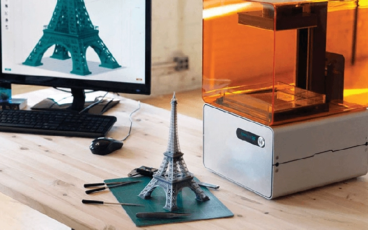
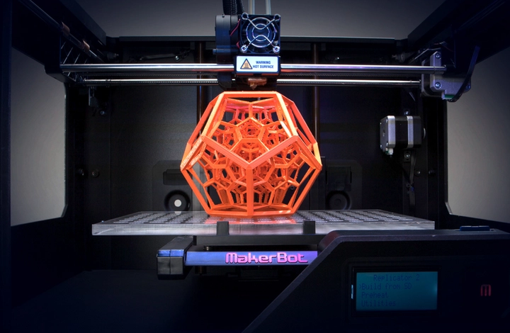
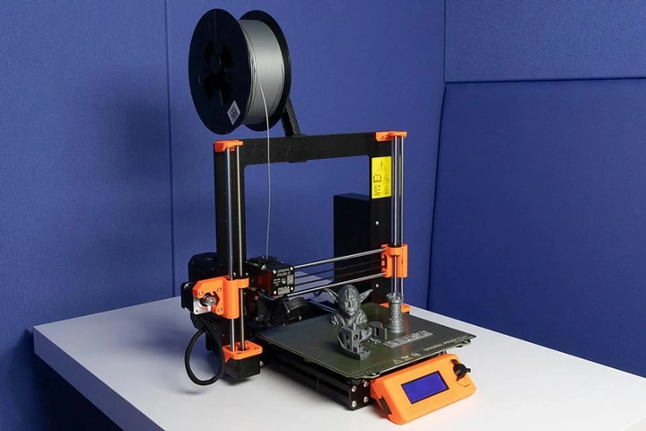
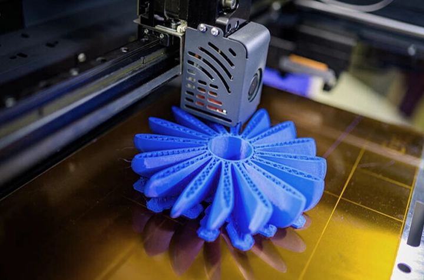

Công nghệ mô phỏng và in 3D tiên tiến
Trong kỷ nguyên công nghiệp 4.0, công nghệ mô phỏng và in 3D tiên tiến đang định hình lại cách con người thiết kế, sản xuất và thử nghiệm sản phẩm. Khả năng mô phỏng các tình huống thực tế trên máy tính kết hợp với việc tạo ra vật thể thực tế qua in 3D giúp rút ngắn thời gian, giảm chi phí và nâng cao hiệu quả sản xuất. Không chỉ trong công nghiệp, công nghệ này còn lan tỏa sang y tế, kiến trúc, giáo dục và nhiều lĩnh vực khác.
Những tiến bộ này không chỉ cải thiện chất lượng sản phẩm mà còn mở ra tiềm năng đổi mới sáng tạo chưa từng có. Bài viết sẽ phân tích chi tiết về khái niệm, ứng dụng, thách thức và tiềm năng tương lai của công nghệ mô phỏng và in 3D tiên tiến, giúp người đọc hình dung rõ ràng vai trò và tầm quan trọng của chúng trong thời đại hiện nay.
Hãy cùng TrithucWorld tìm hiểu về công nghệ mô phỏng và in 3D tiên tiến qua bài viết sau.
1. Khái niệm công nghệ mô phỏng và in 3D
Công nghệ mô phỏng là quá trình tạo ra các mô hình kỹ thuật số để mô phỏng hành vi thực tế của sản phẩm hoặc hệ thống trong nhiều điều kiện khác nhau. Nhờ mô phỏng, kỹ sư có thể dự đoán hiệu suất, đánh giá rủi ro và tối ưu hóa thiết kế trước khi sản xuất. Điều này giúp giảm thiểu sai sót, tiết kiệm thời gian và chi phí đáng kể.
Mô phỏng không chỉ áp dụng trong thiết kế cơ khí, mà còn mở rộng sang kỹ thuật điện, y sinh, hàng không và năng lượng. Việc sử dụng các phần mềm mô phỏng hiện đại cho phép mô phỏng các hiện tượng phức tạp như dòng chảy chất lỏng, nhiệt độ, rung động và ứng suất cơ học.

Ngược lại, in 3D là phương pháp tạo ra vật thể vật lý ba chiều từ dữ liệu kỹ thuật số, bằng cách xếp chồng lớp vật liệu theo hình dạng mong muốn. Khi kết hợp với mô phỏng, in 3D giúp kiểm tra, chỉnh sửa và hoàn thiện sản phẩm nhanh chóng, từ nguyên mẫu nhỏ đến bộ phận chịu lực.
Sự phối hợp giữa mô phỏng và in 3D mở ra khả năng sáng tạo không giới hạn, cho phép thử nghiệm các thiết kế phức tạp, từ các bộ phận máy móc đến mô hình cơ quan con người, trước khi sản xuất hàng loạt.
2. Lịch sử và sự phát triển của in 3D
In 3D bắt đầu từ những năm 1980 với phương pháp Stereolithography (SLA), sử dụng laser chiếu vào nhựa lỏng để tạo ra mô hình ba chiều. Đây là bước đệm quan trọng, giúp các kỹ sư thử nghiệm ý tưởng mà không cần sản xuất hàng loạt.
Trong những năm 1990, các phương pháp mới như Fused Deposition Modeling (FDM) và Selective Laser Sintering (SLS) ra đời. Chúng mở rộng khả năng sử dụng vật liệu, từ nhựa đến kim loại, đồng thời cải thiện độ chính xác và bền chắc của sản phẩm in.
Đến thập niên 2000, các công nghệ như DMLS (Direct Metal Laser Sintering), PolyJet và Binder Jetting đã cho phép in các chi tiết kim loại, cao su và vật liệu phức hợp, phục vụ nhiều lĩnh vực từ công nghiệp ô tô đến y tế.
Ngày nay, in 3D đã trở thành công cụ phổ biến không chỉ trong nghiên cứu mà còn trong sản xuất thông minh, với tốc độ cao, độ chính xác vượt trội và khả năng sản xuất các hình dạng phức tạp mà phương pháp truyền thống khó đạt được.
3. Các loại công nghệ in 3D phổ biến
FDM (Fused Deposition Modeling) là phương pháp phổ biến nhờ chi phí thấp và dễ sử dụng. Nhựa nhiệt dẻo được nung chảy và xếp lớp để tạo hình, phù hợp với các nguyên mẫu cơ bản hoặc sản phẩm thử nghiệm.
SLA (Stereolithography) sử dụng laser chiếu vào nhựa lỏng, tạo ra chi tiết tinh xảo, độ chính xác cao. Phương pháp này đặc biệt hữu ích cho các nguyên mẫu phức tạp trong y tế hoặc thiết kế trang sức.

SLS (Selective Laser Sintering) cho phép in bột nhựa hoặc kim loại, tạo ra sản phẩm chắc chắn và chịu lực tốt. DMLS và PolyJet cho phép in kim loại, vật liệu dẻo hoặc kết hợp nhiều vật liệu cùng lúc, mở ra khả năng thiết kế đa dạng.
Mỗi công nghệ có ưu nhược điểm riêng, và việc lựa chọn phụ thuộc vào mục đích, chi phí, vật liệu và độ phức tạp của sản phẩm. Sự đa dạng này giúp ngành công nghiệp dễ dàng triển khai in 3D từ nguyên mẫu đến sản xuất hàng loạt.
4. Ứng dụng mô phỏng kỹ thuật trong thiết kế sản phẩm
Mô phỏng kỹ thuật giúp dự đoán ứng suất cơ học, khả năng chịu lực, độ bền và tuổi thọ sản phẩm trước khi đưa vào sản xuất thực tế. Kỹ sư có thể điều chỉnh hình dạng, cấu trúc và vật liệu để đạt hiệu suất tối ưu.
Ngoài ra, mô phỏng còn phân tích dòng chảy chất lỏng, nhiệt độ, rung động và tác động môi trường, giúp cải thiện hiệu suất, an toàn và độ tin cậy của sản phẩm. Đây là yếu tố quan trọng trong các ngành ô tô, hàng không và năng lượng.
Nhờ mô phỏng, các sai sót trong thiết kế được phát hiện sớm, giảm chi phí sản xuất và tối ưu hóa nguồn lực. Đồng thời, nó tạo điều kiện để thử nghiệm các ý tưởng sáng tạo mà không tốn nhiều chi phí hay vật liệu.
Mô phỏng kỹ thuật còn hỗ trợ phát triển các sản phẩm cá nhân hóa và y tế, từ thiết kế răng giả đến bộ phận cấy ghép, mở ra khả năng sản xuất chính xác, phù hợp từng cá nhân hoặc từng nhu cầu đặc thù.
5. Sự kết hợp giữa mô phỏng và in 3D trong quy trình sản xuất
Khi mô phỏng kết hợp với in 3D, quy trình sản xuất trở nên linh hoạt, nhanh chóng và hiệu quả hơn. Nguyên mẫu được in từ dữ liệu mô phỏng có thể kiểm tra ngay lập tức, đánh giá thiết kế và điều chỉnh nếu cần.
Sự kết hợp này giúp giảm chi phí vật liệu, rút ngắn thời gian phát triển sản phẩm, đồng thời tăng độ chính xác và chất lượng cuối cùng. Các doanh nghiệp có thể đưa sản phẩm ra thị trường nhanh hơn mà vẫn đảm bảo tiêu chuẩn kỹ thuật.

Ngoài ra, mô phỏng và in 3D thúc đẩy sáng tạo không giới hạn, cho phép thử nghiệm các hình dạng phức tạp và vật liệu mới mà trước đây phương pháp truyền thống không thể thực hiện.
Đây chính là lý do công nghệ mô phỏng – in 3D đang trở thành trụ cột của sản xuất thông minh, nâng cao khả năng cạnh tranh và thúc đẩy đổi mới sáng tạo trong mọi ngành công nghiệp.
6. In 3D trong y tế và sinh học
Trong y tế, in 3D giúp tạo mô hình giải phẫu, hỗ trợ phẫu thuật chính xác và giảm rủi ro cho bệnh nhân. Các bác sĩ có thể in chính xác các bộ phận cơ thể để lên kế hoạch phẫu thuật chi tiết, từ tim, xương đến các cơ quan phức tạp. Nhờ vậy, quy trình phẫu thuật trở nên an toàn hơn, đặc biệt đối với các ca khó hoặc bệnh nhân có tình trạng sức khỏe phức tạp.
Công nghệ in 3D còn được ứng dụng trong cấy ghép và thiết bị y tế tùy chỉnh, bao gồm răng giả, khớp nhân tạo, ốc tai giả và các dụng cụ phẫu thuật đặc thù. Việc tạo ra thiết bị vừa vặn, chính xác giúp giảm thời gian hồi phục, nâng cao hiệu quả điều trị và cải thiện trải nghiệm của bệnh nhân.
Ngoài ra, các nhà nghiên cứu đang thử nghiệm in mô và in tế bào sống, mở ra tiềm năng in các cơ quan nhân tạo trong tương lai. Công nghệ này không chỉ giúp phát triển các mô cấy thử nghiệm mà còn có thể cách mạng hóa ngành y học, cứu sống hàng triệu bệnh nhân và giảm phụ thuộc vào nguồn hiến tặng cơ quan truyền thống.
Một khía cạnh quan trọng khác là khả năng tối ưu hóa chi phí và thời gian nghiên cứu thuốc, nhờ mô hình cơ thể in 3D giúp thử nghiệm thuốc trực tiếp trên mô nhân tạo trước khi thử nghiệm lâm sàng trên người. Đây là bước tiến đáng kể, giúp y học cá nhân hóa và chính xác hơn.
7. Ứng dụng trong ngành công nghiệp ô tô và hàng không
Trong ngành ô tô, in 3D giúp sản xuất nguyên mẫu nhanh và các bộ phận nhẹ, từ bánh răng, khung xe đến các chi tiết nội thất phức tạp. Kỹ sư có thể thử nghiệm nhiều thiết kế khác nhau mà không cần sản xuất hàng loạt, từ đó rút ngắn vòng đời phát triển sản phẩm.
Trong hàng không, công nghệ này được dùng để chế tạo bộ phận chịu lực, tối ưu trọng lượng và nâng cao hiệu suất nhiên liệu. Nhờ mô phỏng kết hợp in 3D, các bộ phận được kiểm tra kỹ lưỡng về độ bền, chịu áp lực và an toàn trước khi lắp ráp trên máy bay.
In 3D còn thúc đẩy sáng tạo thiết kế, cho phép tạo ra các cấu trúc phức tạp mà phương pháp truyền thống khó thực hiện. Ví dụ, các chi tiết hình học bên trong động cơ hoặc khung máy bay có thể được tối ưu để giảm trọng lượng mà vẫn đảm bảo độ bền.
Một lợi ích khác là giảm chi phí lưu kho và sản xuất theo nhu cầu. Thay vì sản xuất hàng loạt và lưu kho phụ tùng, các bộ phận có thể in theo yêu cầu, giúp doanh nghiệp linh hoạt hơn và giảm lãng phí vật liệu.
8. In 3D trong kiến trúc và xây dựng
In 3D trong kiến trúc giúp tạo mô hình thiết kế chi tiết, từ các tòa nhà chọc trời đến không gian nội thất, giúp kiến trúc sư và khách hàng dễ hình dung công trình. Mô hình 3D còn hỗ trợ thử nghiệm ánh sáng, cấu trúc và phối cảnh trước khi xây dựng thực tế.
Ngoài mô hình, công nghệ in bê tông đang được thử nghiệm để xây dựng nhà ở và các công trình thử nghiệm với chi phí thấp hơn và tốc độ thi công nhanh hơn. Phương pháp này giúp giảm lãng phí vật liệu, giảm nhân công và tiết kiệm thời gian thi công đáng kể.

In 3D cũng mở ra khả năng cá nhân hóa công trình, từ nhà ở, văn phòng đến các công trình công cộng, theo nhu cầu và thiết kế riêng của khách hàng. Các cấu trúc phức tạp mà trước đây khó thi công bằng phương pháp truyền thống giờ có thể thực hiện dễ dàng.
Thêm vào đó, tính bền vững là một ưu điểm quan trọng. In 3D cho phép sử dụng vật liệu tái chế và giảm dư thừa, góp phần giảm tác động môi trường so với xây dựng truyền thống.
9. Thách thức và hạn chế của công nghệ in 3D tiên tiến
Chi phí đầu tư máy móc, vật liệu in và duy trì công nghệ vẫn còn cao, đặc biệt với kim loại và vật liệu sinh học. Điều này hạn chế khả năng phổ biến rộng rãi trong sản xuất hàng loạt.
Độ bền sản phẩm in 3D đôi khi không bằng phương pháp truyền thống, cần kiểm định kỹ lưỡng trước khi đưa vào sử dụng. Một số vật liệu còn nhạy cảm với nhiệt độ, ánh sáng hoặc độ ẩm, gây hạn chế ứng dụng trong môi trường khắc nghiệt.
Các quy định an toàn, tiêu chuẩn sản xuất và chứng nhận vẫn đang phát triển. Doanh nghiệp cần theo dõi và tuân thủ các quy chuẩn mới để đảm bảo sản phẩm in 3D đạt chất lượng và an toàn.
Ngoài ra, việc thiếu nhân lực có kỹ năng cao trong vận hành máy in 3D, thiết kế CAD và mô phỏng kỹ thuật là một rào cản. Việc đào tạo và nâng cao trình độ chuyên môn là điều cần thiết để công nghệ này phát triển bền vững.
10. Tương lai của mô phỏng và in 3D
Tương lai của công nghệ in 3D là sự kết hợp trí tuệ nhân tạo, tự động hóa và vật liệu mới, giúp sản xuất nhanh hơn, chính xác hơn và linh hoạt hơn. AI có thể tối ưu hóa thiết kế, dự đoán các vấn đề kỹ thuật và giảm thời gian thử nghiệm.
Công nghệ lai mô phỏng–in 3D sẽ mở ra khả năng cá nhân hóa sản phẩm hàng loạt, từ y tế, tiêu dùng đến công nghiệp nặng. Người dùng sẽ có thể thiết kế sản phẩm theo nhu cầu cá nhân mà vẫn đảm bảo chi phí hợp lý.
Với sự phát triển liên tục, mô phỏng và in 3D sẽ trở thành nền tảng sản xuất thông minh, giảm lãng phí, tăng tốc độ sáng tạo và mở ra kỷ nguyên mới cho thiết kế và sản xuất. Các doanh nghiệp nắm bắt xu hướng này sẽ dẫn đầu về đổi mới sáng tạo và hiệu quả sản xuất trong tương lai.